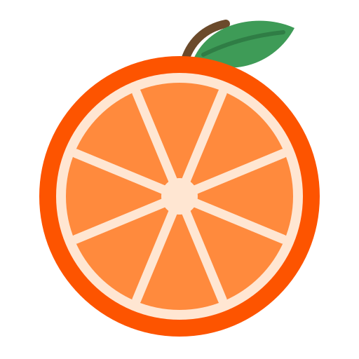

Images
JPG, PNG, WebP, HEIC, AVIF, TIFF, GIF, BMP, SVG, ICO
→ JPG · PNG · WebP · HEIC · AVIF · TIFF · GIF · PDF · ICO

SatsumaFor Linux · Free and open source
Satsuma is a wheel that lives where your files are. Drop anything on it, flick to a slice, and the result appears right next to the original. No uploads, no accounts, no progress bars in a browser tab.
Ubuntu, Debian, Fedora, Arch · X11 and Wayland · x86_64 and ARM
Satsuma drives the tools Linux already trusts: ffmpeg, ImageMagick, poppler, pandoc and LibreOffice. If a tool is missing, its slices simply hide until you install it.
JPG, PNG, WebP, HEIC, AVIF, TIFF, GIF, BMP, SVG, ICO
→ JPG · PNG · WebP · HEIC · AVIF · TIFF · GIF · PDF · ICO
MP4, MOV, MKV, WebM, GIF, AVI, WMV, M4V
→ MP4 · MOV · MKV · WebM · GIF · MP3 · M4A
MP3, M4A, WAV, FLAC, OGG, Opus, AIFF, WMA, AAC
→ MP3 · M4A · WAV · FLAC · OGG · Opus · AIFF
Any PDF, every page
→ DOCX · ODT · PPTX · XLSX · JPG · PNG · TXT · MD · HTML · EPUB
DOCX, DOC, ODT, RTF, Markdown, TXT, HTML, EPUB, Pages preview
→ DOCX · ODT · PDF · MD · TXT · HTML · EPUB · RTF
PPTX, PPT, ODP, Keynote preview
→ PDF · PPTX · ODP · a picture per slide
XLSX, XLS, ODS, CSV, TSV
→ XLSX · ODS · CSV · TSV · PDF · HTML
SRT, VTT, ASS · ZIP, TAR, GZ, XZ, BZ2, 7Z, RAR
→ SRT · VTT · plain text · extract to a folder
Two dozen everyday edits, each one a single slice. Prompts are tiny, prefilled and keyboard-first: Enter confirms.
Images, video, audio and PDFs with sensible quality presets
By percent or longest side
1:1, 16:9, 9:16 or your own ratio
Audio and video to the second
PDFs by pages, media into parts
PDFs, images→PDF, clips, tracks
90°, 180°, 270°; horizontal or vertical
Photos, videos and PDFs
Before you share
One slice each
0.5×, 1.5×, 2×
With a trim
EBU R128
Audio and video
Reduce or export frames
Password prompt
Anything
Copy, move, trash, show in folder, float, send
There is no server. Satsuma has no network code at all: every conversion runs on your CPU with open source tools you can inspect. Results are written next to the original, never over it, and half-finished files never appear: output is written to a hidden temp file and renamed only when complete.
photo 2.jpg100% local
Zero network code
Grab the package from the latest release, then:
sudo apt install ./satsuma_*_all.debInstalls into ~/.local. Run it with sudo to pull in the tools too.
curl -fsSL https://raw.githubusercontent.com/anmolxlight/satsuma/main/install.sh | bashThen right-click any file in Files, Nemo, Dolphin or Thunar and choose Satsuma…, or bind satsuma --popup to a key.